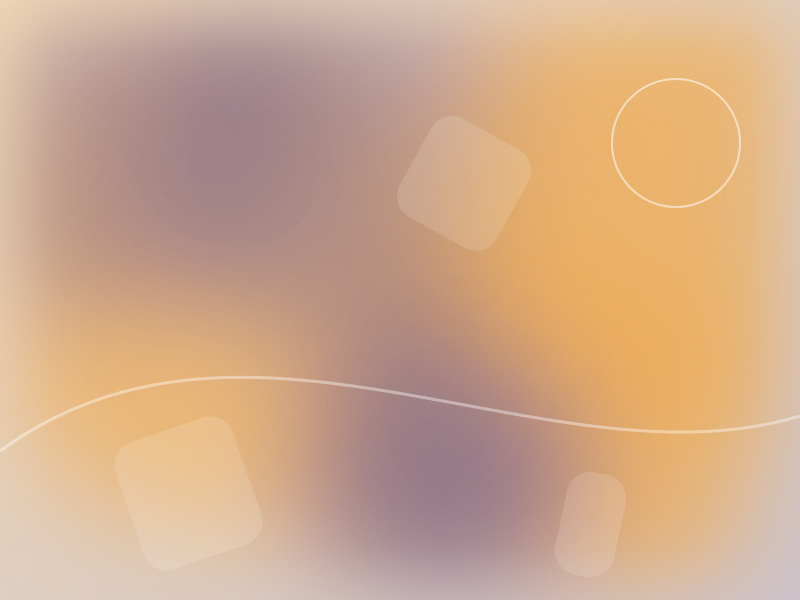
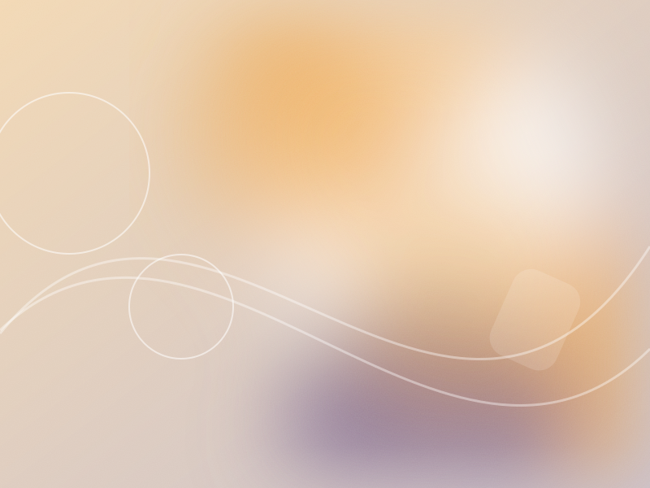
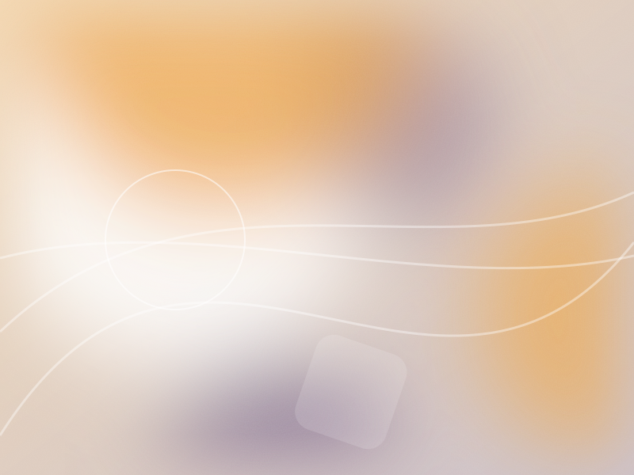
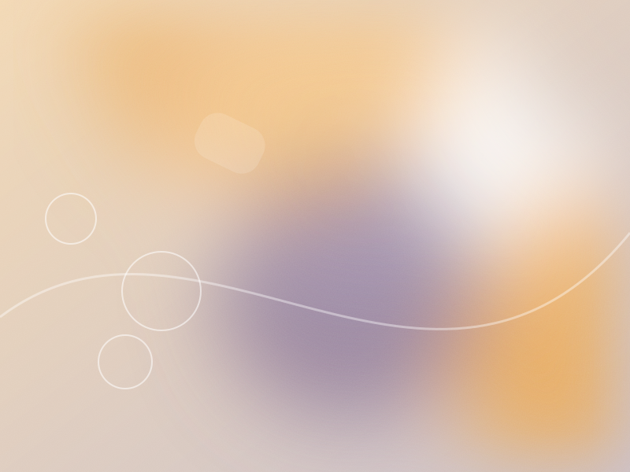
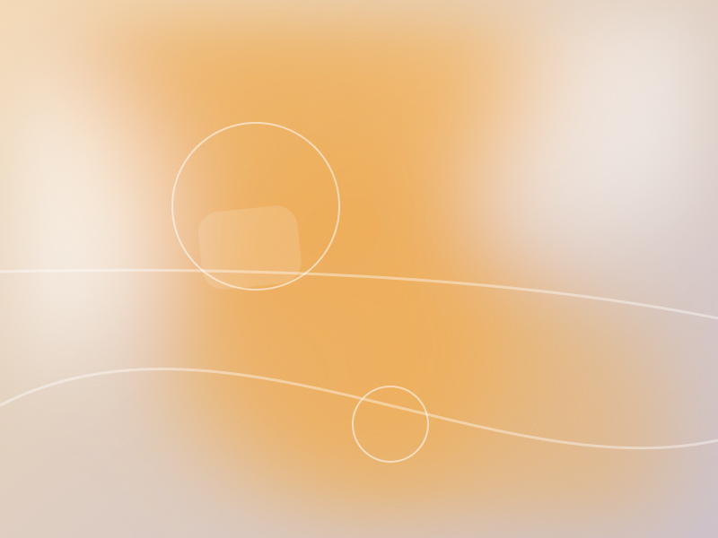
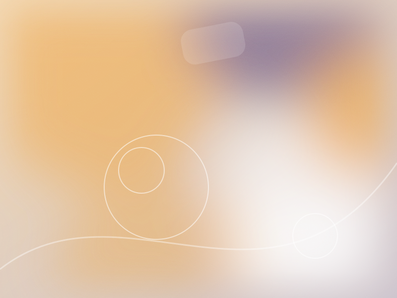
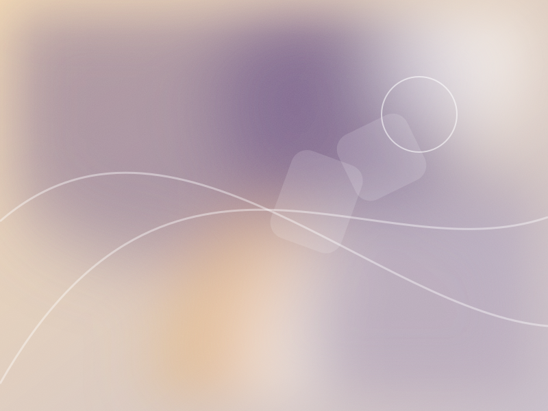
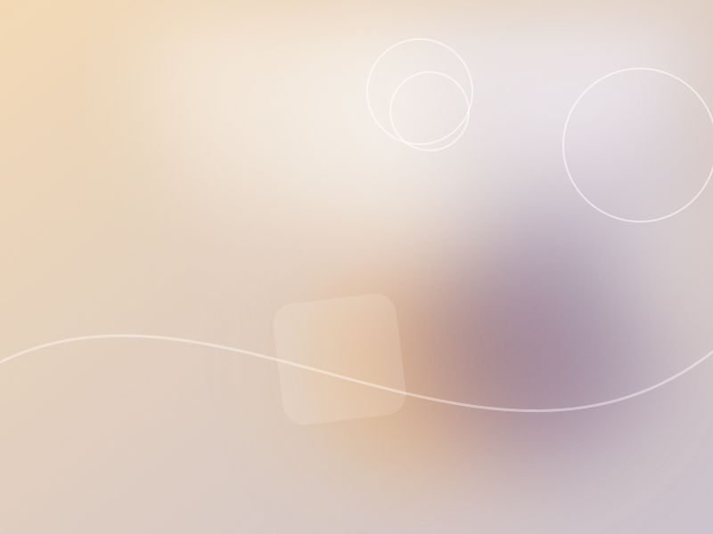
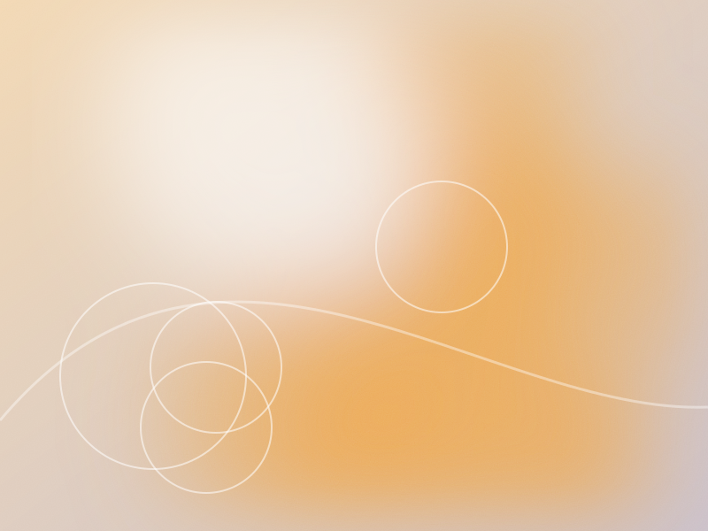

Meet the Moon
The Moon doesn't make its own light. It reflects sunlight, and as it travels around Earth, we see different portions of its sunlit side. Those changing views are called phases.
Your sample course is just getting started.
A tiny sample course about the shapes and stories of the night sky.
The Moon doesn't make its own light. It reflects sunlight, and as it travels around Earth, we see different portions of its sunlit side. Those changing views are called phases.
Your sample course is just getting started.
Explore the Moon, constellations, and the changing night sky.
Discover tiny details in plants, patterns, and everyday objects.
Try a small creative prompt and see where it leads.
The Moon keeps orbiting Earth. We see different portions of its sunlit half as its position changes, creating the familiar phases.
The sunlit side faces away from our view.
About half of the visible side appears bright.
We see nearly all of the sunlit face.
Short lessons make it easier to return and keep going.
A knowledge check is a chance to learn, not a score to chase.
Look up tonight and connect the lesson to the real world.
Pick a quiet moment, focus on one question, and give yourself time to think through the answer.
Choose a spot where you can look, listen, and notice.
Questions are a useful beginning, even when they lead somewhere unexpected.
Generated art, parallax depth and glass details.







Discover learn at Little Lantern.

Discover wonder at Little Lantern.

Discover play at Little Lantern.

Discover glow at Little Lantern.
Discover learn at Little Lantern.
Discover wonder at Little Lantern.
Log in with the demo login to choose one. Nothing is charged.
It is a friendly learning concept for everyone.
They are just playful demo interactions.
It is a fictional portfolio project.
No sign-up needed; this is a visual concept, and no contact details are collected.
Explore the concept